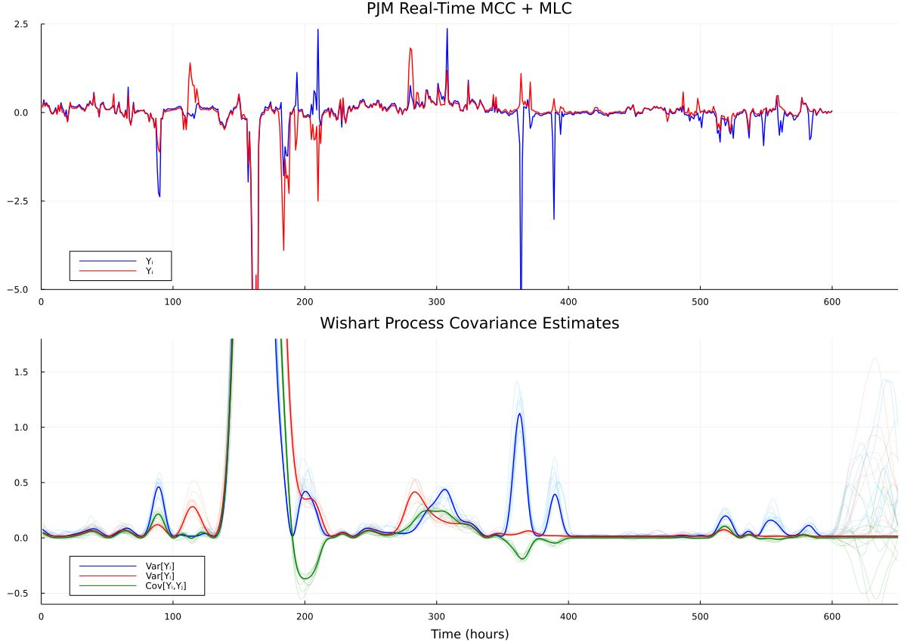
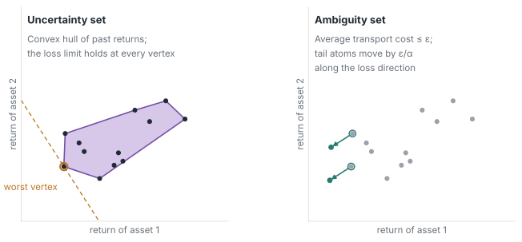
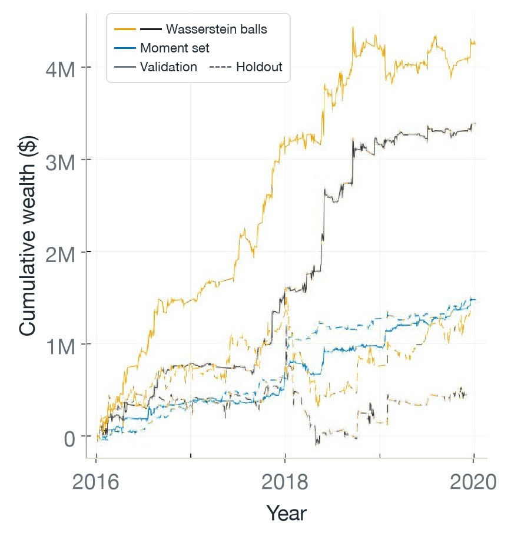
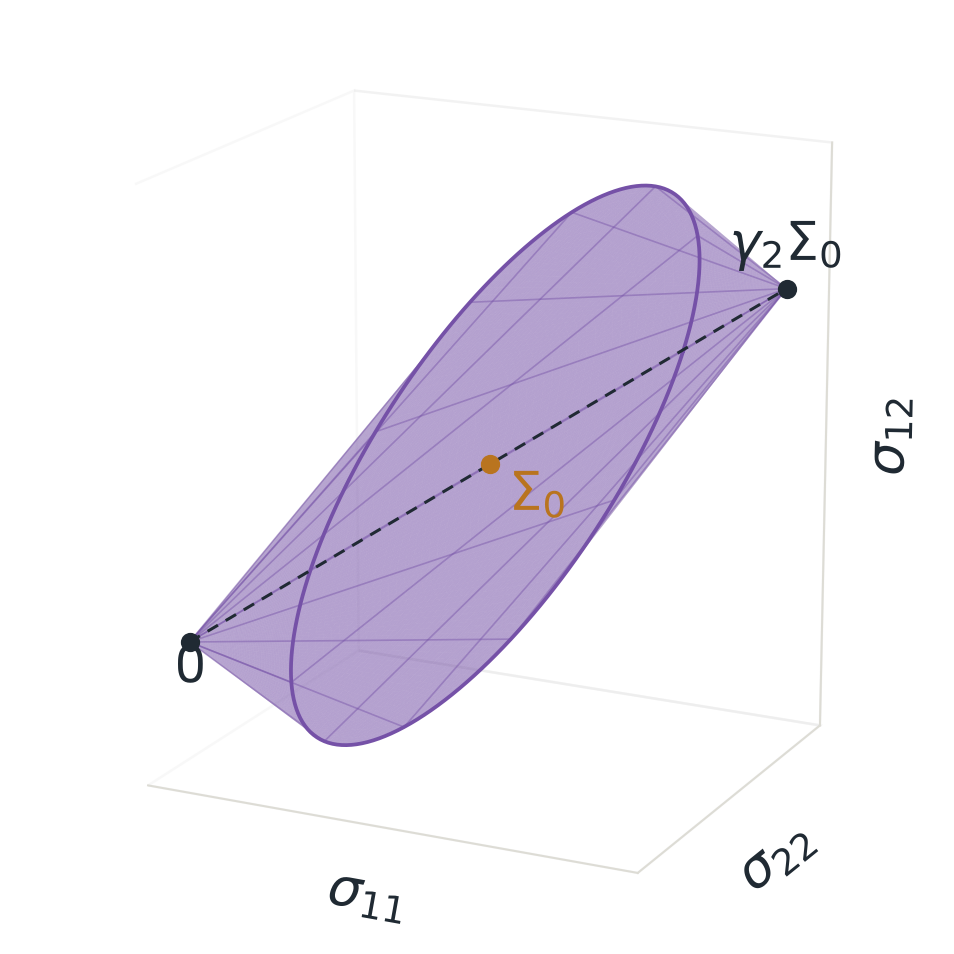
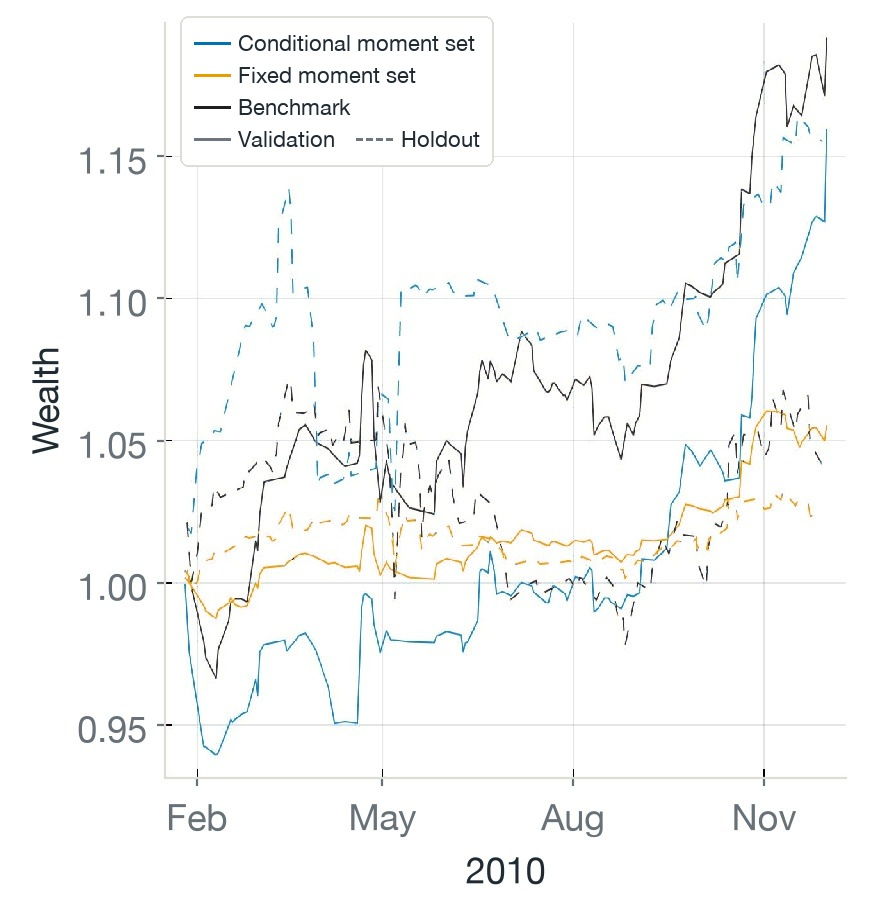

01 · Conditional lawDecisions under an unknown conditional law
Decisions under uncertainty depend on the information available when they are made and how their outcomes are valued. Let \(w\) be the information available when a decision \(u\in\mathcal B(w)\) is chosen, let \(\xi\in\Xi\subseteq\mathbb R^m\) be the outcome revealed afterwards, and let \(\ell(u,\xi)\) be the loss that the two incur together. A risk functional \(\rho_{\mathbb Q}[\,\cdot\,]\) maps a loss and a probability distribution, or law, \(\mathbb Q\) of \(\xi\) to a number: an expectation, a variance limit, or a tail measure. Evaluated under the conditional law \(\mathbb P(\cdot\mid w)\) of \(\xi\) given \(w\), the decision problem is
With the expectation as the risk functional, the problem is a stochastic program (Kuhn et al., 2025). Supervised learning has the same form: \(u\) collects the parameters of a predictor, \(\xi\) pairs features with a label, and \(\ell\) is the prediction loss. Every quantity in the problem is known except \(\mathbb P(\cdot\mid w)\), and the decision depends on all of its joint structure. In a sequential setting the uncertainty process has a state that determines the conditional distribution of future realizations, and that state is not observed; the decision maker observes a history. Replacing the conditional law by a fixed unconditional distribution changes the problem being solved.
What is available is a record \(\mathcal D_N\) and modeling assumptions, combined into an estimate \(\widehat{\mathbb P}(\cdot\mid w)\). Without context and with independent samples \(\xi_1,\dots,\xi_N\), the estimate is the empirical distribution \(\widehat{\mathbb P}_N=\tfrac1N\sum_{i=1}^N\delta_{\xi_i}\); with the expectation as the risk functional, optimizing against it is empirical risk minimization. Everything that follows concerns the gap between optimizing against \(\widehat{\mathbb P}\) and being evaluated under \(\mathbb P\).
For simplicity of explanation, this page uses the simplest instance throughout, a loss linear in the outcome, \(\ell(u,\xi)=-u^\top\xi\). This is portfolio optimization: \(u\) allocates a budget across \(m\) assets whose returns are \(\xi\), and \(\mathcal B(w)\) carries budget, exposure, and integrality limits. Even in this instance the decision depends on how the returns move together, and that dependence can change over time, as for the two nodal price components in the figure.

02 · Sources of errorIn-sample optimism and out-of-sample disappointment
Write \(J(u)=\rho_{\mathbb P}[-u^\top\xi]\) for the true risk of a decision and \(\widehat J(u)=\rho_{\widehat{\mathbb P}}[-u^\top\xi]\) for its plug-in estimate, and let \(\hat u\) minimize \(\widehat J\). For independent samples, an expected loss, and an unbiased estimate,
Here \(\mathbb P^N\) is the sampling distribution of the \(N\) independent observations. The left inequality is the optimizer’s curse (Smith and Winkler, 2006): Zero-mean estimation error becomes a downward bias of the reported value, because the minimization selects the decisions whose losses were underestimated. The right inequality says the realized risk of the selected decision is worse than the optimum. Together they predict post-decision regret: The value reported in sample is optimistic, even when the model class is correct.
Sampling error is only the first source. The model class can omit a mechanism that matters for the loss (misspecification). Prior knowledge can be wrong or too rigid to follow the data. The conditional law that generated the record can differ from the distribution that will evaluate the decision (shift). A more risk-averse \(\rho\) changes how the variability of the loss under \(\widehat{\mathbb P}\) is priced; it corrects none of these four errors.
The criterion that matters is therefore how well the decision generalizes, not how well the estimated distribution fits the record. Selecting a model by its marginal likelihood rewards how well it explains the record, which need not predict how the induced decision performs (Lotfi et al., 2022). The plug-in value \(\widehat J(\hat u)\) is optimistic by the inequality above, so it cannot certify the decision. What can be stated about an unknown distribution, and controlled, is the probability that a decision \(\hat u_{\mathcal A}\) disappoints a certificate \(\widehat J_{\mathcal A}\) computed from the same data, an upper estimate of its risk produced by the robust formulations of the next two sections:
Here \(\beta\in(0,1)\) is the tolerated probability of disappointment. Bounding this probability requires that the training samples be drawn from the distribution that will evaluate the decision, that sample averages converge to their expectations (independence, finite moments), that tails be controlled (compact support or light tails), and that the loss be regular in the decision. Shift and misspecification violate the first condition. Sections 03 and 04 build objects that control the probability when the conditions hold; Section 05 returns to the case in which the law moves.
03 · Robust formulationsAn uncertainty set and an ambiguity set assert different departures from the estimate
Two formulations hedge the decision against errors in the estimate. In robust optimization, an adversary chooses the outcome from an uncertainty set \(\mathcal U(w)\); in distributionally robust optimization, it chooses the distribution from an ambiguity set \(\mathcal A(w)\):
An uncertainty set \(\mathcal U(w)\) asserts where the outcome can lie (Ben-Tal and Nemirovski, 1999; Bertsimas and Sim, 2004). An ambiguity set \(\mathcal A(w)\) asserts how far the distribution generating the outcome can be from the estimate. The first is a special case of the second. For a risk functional that returns the loss itself on a point distribution, such as the expectation or the conditional value-at-risk, the ambiguity set of point distributions \(\delta_\xi\) with \(\xi\in\mathcal U(w)\) recovers the worst-case loss. In both, the geometry of the set is a modeling assertion about which deviations from the nominal information are plausible, and enlarging the set changes which of them are covered as well as how large they can be.
An uncertainty set can be built directly from data. In the formulation of Fernandes et al. (2016), the set is the convex hull of the last \(H\) observed return vectors, and the allocation must keep its return above a tolerated loss \(\lambda\) of current wealth \(W_0\); since the constraint \(u^\top\xi\ge-\lambda W_0\) is linear in the outcome, it only has to hold at those \(H\) vectors. Rosemberg et al. (2018) extended the formulation to futures portfolios with integer contract lots, margin requirements, and returns forecast from spot prices and interest rates. The 660-day case study there found that the tolerated loss had to be set close to zero for the strategy to perform well, so the choice of \(\lambda\), a parameter of the uncertainty set, determined how well the strategy performed.
Ambiguity sets generalize uncertainty sets by allowing more prior knowledge about the structure of the distributions to be assumed. Common choices are moment conditions (Delage and Ye, 2010), likelihood evidence from the samples (Wang et al., 2016; Bertsimas et al., 2018), and a bound on the discrepancy from the empirical distribution, measured by a \(\phi\)-divergence (Ben-Tal et al., 2013) or by optimal transport (Pflug and Wozabal, 2007; Mohajerin Esfahani and Kuhn, 2018). Each choice encodes how the true distribution can differ from the finite-sample empirical distribution, and the rest of this page uses two of them. The moment ambiguity set contains every distribution whose first two moments are compatible with nominal estimates, including distributions with very different tails, and it is the set that Section 05 updates with the conditional covariance:
Here \(\mu_0\) and \(\Sigma_0\succ0\) are the nominal mean and covariance, \(d_{\mathbb Q}\) is the mean displacement, \(\gamma=(\gamma_1,\gamma_2)\) contains nonnegative tolerances, and \(\preceq\) denotes positive-semidefinite order.
The Wasserstein ball instead contains the distributions into which the empirical distribution can be transported at bounded average cost. Unlike the common Kullback–Leibler ball, which only reweights the training samples, it therefore also contains distributions on outcomes that were never observed. For a norm \(\lVert\cdot\rVert\) on \(\mathbb R^m\), the type-1 Wasserstein distance and its ball are
Here \(\mathcal P_1(\Xi)\) is the set of probability distributions on \(\Xi\) with finite first moment, \(\Pi(\mathbb Q,\widehat{\mathbb P}_N)\) consists of the joint distributions on \(\Xi\times\Xi\) with marginals \(\mathbb Q\) and \(\widehat{\mathbb P}_N\), and \(\varepsilon\ge0\) is the transport budget.
The radius of the ball acts on the decision as a regularization weight. Write the conditional value-at-risk of a loss \(L\) at tail fraction \(\alpha\in(0,1]\) in its minimization form (Rockafellar and Uryasev, 2000), \(\operatorname{CVaR}_\alpha(L)=\min_\tau\{\tau+\alpha^{-1}\mathbb E[(L-\tau)^+]\}\), and take the worst case of the inner expectation for each threshold \(\tau\). If \(\Xi=\mathbb R^m\), Theorem 6.3 of Mohajerin Esfahani and Kuhn (2018) gives
Here \(\ell_\tau\) is the threshold loss, \(x^+=\max\{x,0\}\) is the positive part, and \(\lVert\cdot\rVert_*\) is the dual norm. On a smaller support the right side is an upper bound, and since the minimum over \(\tau\) is taken outside the worst case, the left side bounds the worst-case CVaR from above. The penalty \(\tfrac{\varepsilon}{\alpha}\lVert u\rVert_*\) is the norm regularization familiar from learning: with labels held fixed, Wasserstein-robust training of a linear classifier with the hinge or logistic loss is norm-regularized training with the radius as the weight, and for a neural network the robust loss is bounded above by a Lipschitz-regularized one (Shafieezadeh-Abadeh et al., 2019). Penalizing the transport cost instead of bounding it turns robust training into adversarial training with a certificate (Sinha et al., 2018).

The certificate of Section 02 is the worst-case risk that a robust formulation returns with its decision. Whenever the ambiguity set contains the true distribution, the out-of-sample risk of the decision stays below this certificate, and no data-driven procedure with the same reliability is less conservative. Among all data-driven predictors whose probability of disappointment decays at a given exponential rate, the least conservative is the worst case over the likelihood ambiguity set, a Kullback–Leibler ball around the empirical distribution with radius equal to that rate (Van Parys et al., 2021).
However, these guarantees fix the type of ambiguity set in advance, assume independent samples from a fixed distribution, and may leave implicit how much model misspecification or distribution shift the set accounts for. In practice, both the type and the size of the ambiguity set are chosen from data, and how to calibrate them is the question my research explores.
04 · CalibrationThe size of the set is part of the decision procedure
The type of ambiguity set does not fix a decision; the type and its size together do. The robust problem returns a pair, the decision \(\hat u_{\mathcal A}\) and its certificate \(\widehat J_{\mathcal A}=\min_u\sup_{\mathbb Q\in\mathcal A}\rho_{\mathbb Q}[-u^\top\xi]\) (written \(\widehat J_\varepsilon\) for a ball of radius \(\varepsilon\)), and the reliability of the certificate is a property of the size that produced it. Changing the size after the decision has been computed, or deploying the decision where the training data no longer describe the law, leaves the decision without a valid certificate.

For Wasserstein balls the size has a statistical meaning. If the samples are independent draws from a light-tailed distribution \(\mathbb P\), that is, \(\mathbb E_{\mathbb P}\big[\exp(\lVert\xi\rVert^a)\big]<\infty\) for some \(a>1\), a measure-concentration bound gives a radius \(\varepsilon_N(\beta)\) for which \(\mathbb P\) lies in the ball with probability at least \(1-\beta\). The certificate then bounds the out-of-sample performance with the same reliability (Mohajerin Esfahani and Kuhn, 2018, Theorem 3.5). If, in addition, the loss is continuous and grows at most linearly in the outcome, \(|\ell(u,\xi)|\le L(1+\lVert\xi\rVert)\), the feasible set is closed, and the confidence levels \(\beta_N\) are summable while the radii \(\varepsilon_N(\beta_N)\) vanish, then almost surely every accumulation point of the robust decisions is optimal for the true distribution (Theorem 3.6, asymptotic consistency). For large \(N\) the radius shrinks like \(N^{-1/\max\{m,2\}}\), slowly in high dimension, and its constants are conservative. Because this theoretical radius is too large to be useful in practice, the same authors recommend choosing it by holdout or cross-validation, so that the radius is itself estimated from data.
A fixed-radius study on PJM data shows the consequence. The returns are day-ahead minus real-time price spreads for a portfolio of virtual bids, and two Wasserstein-ball allocations and a moment-set allocation were run on validation data and on holdout data over the same four years.

A single dataset cannot show that fixed Wasserstein sets fail, but it does show why a radius chosen on data needs held-out evidence. Each radius was selected for its validation performance, which the optimizer’s curse of Section 02 makes optimistic. The moment-set allocation, in contrast, ended its holdout run close to its validation run. A plausible explanation is the information each set retains from the samples. A Wasserstein ball is centered on the empirical distribution, so the robust decision depends on every sample and the selected radius can fit the validation period, whereas a moment set depends on the samples only through their mean and covariance. In neither case do the guarantees above apply, since the price spreads are not independent draws from a fixed distribution, as the figure in Section 01 shows. Section 05 therefore conditions the moment set on the available information.
05 · UpdatingAmbiguity sets conditioned on information
The guarantees of Sections 03 and 04 assume that the training data and the deployment share one distribution. When the conditional law moves, as in the PJM figure, a size fitted to one regime need not suit another. The set can instead be conditioned on the information available, by reading its parameters from the posterior uncertainty of the forecaster that produces the nominal distribution.
This approach was implemented for the moment ambiguity set \(\mathcal A_\gamma\). The forecaster is a Wishart-process model, which places Gaussian-process priors on covariance entries (Wilson and Ghahramani, 2011). The variant used here places them on the entries of a symmetric matrix \(\Phi(w)\) and sets the conditional covariance to the matrix exponential \(\Sigma(w)=\exp\big(\Phi(w)\big)\), positive definite by construction. Markov chain Monte Carlo gives covariance draws \(\Sigma^{(1)},\dots,\Sigma^{(S)}\) for the current period, and the second-moment scale is the smallest that dominates a prescribed fraction of them:
Here \(S\) is the number of posterior draws, \(\mathbf 1\) is the indicator of the stated matrix inequality, and \(\beta\in(0,1)\) is the tolerated uncovered fraction of draws.

The update rule defines a contextual ambiguity map \(w\mapsto\mathcal A(w)\), and the figure below judges it by the disappointment of the decisions it induces, the criterion of Section 02, rather than by how well the sets cover the estimated distribution. It compares the conditional moment set with a fixed moment set and a benchmark, each run on validation and on holdout data, so the gap between the two runs of each allocation measures its post-decision regret.

On this dataset, the conditional moment set ended with the smallest gap between its validation and holdout runs, while the benchmark’s validation advantage disappeared on holdout. A single window cannot establish that the rule generalizes, but the result suggests that conditioning the ambiguity set on the available information can make validation performance a reliable guide to holdout performance. Forecasters whose output is the ambiguity set itself, trained on the disappointment of the decisions they induce, are a direction this research is currently exploring.
Software
PortfolioOpt.jl compiles each pairing of a risk measure with a distribution, an uncertainty set, or an ambiguity set into its tractable reformulation, so the formulations of Section 03 are written one term at a time and assessed in rolling backtests.
PortfolioOpt.jl
Composes uncertainty models, risk measures and their role as objective or constraint into tractable nominal, robust and distributionally robust programs, evaluated in rolling backtests.
References
- A. Ben-Tal, A. Nemirovski. Robust solutions of uncertain linear programs. Operations Research Letters 25(1):1–13, 1999.
- A. Ben-Tal, D. Den Hertog, A. De Waegenaere, B. Melenberg, G. Rennen. Robust solutions of optimization problems affected by uncertain probabilities. Management Science 59(2):341–357, 2013.
- D. Bertsimas, V. Gupta, N. Kallus. Robust sample average approximation. Mathematical Programming 171(1):217–282, 2018.
- D. Bertsimas, M. Sim. The price of robustness. Operations Research 52(1):35–53, 2004.
- E. Delage, Y. Ye. Distributionally robust optimization under moment uncertainty with application to data-driven problems. Operations Research 58(3):595–612, 2010.
- B. Fernandes, A. Street, D. Valladão, C. Fernandes. An adaptive robust portfolio optimization model with loss constraints based on data-driven polyhedral uncertainty sets. European Journal of Operational Research 255(3):961–970, 2016.
- D. Kuhn, S. Shafiee, W. Wiesemann. Distributionally robust optimization. Acta Numerica 34:579–804, 2025.
- S. Lotfi, P. Izmailov, G. Benton, M. Goldblum, A. G. Wilson. Bayesian model selection, the marginal likelihood, and generalization. Preprint arXiv:2202.11678, 2022.
- P. Mohajerin Esfahani, D. Kuhn. Data-driven distributionally robust optimization using the Wasserstein metric: Performance guarantees and tractable reformulations. Mathematical Programming 171(1–2):115–166, 2018.
- G. Pflug, D. Wozabal. Ambiguity in portfolio selection. Quantitative Finance 7(4):435–442, 2007.
- R. T. Rockafellar, S. Uryasev. Optimization of conditional value-at-risk. Journal of Risk 2:21–42, 2000.
- S. Shafieezadeh-Abadeh, D. Kuhn, P. Mohajerin Esfahani. Regularization via mass transportation. Journal of Machine Learning Research 20(103):1–68, 2019.
- A. Sinha, H. Namkoong, R. Volpi, J. Duchi. Certifying some distributional robustness with principled adversarial training. International Conference on Learning Representations (ICLR), 2018.
- J. E. Smith, R. L. Winkler. The optimizer’s curse: Skepticism and postdecision surprise in decision analysis. Management Science 52:311–322, 2006.
- B. P. G. Van Parys, P. Mohajerin Esfahani, D. Kuhn. From data to decisions: Distributionally robust optimization is optimal. Management Science 67(6):3387–3402, 2021.
- Z. Wang, P. W. Glynn, Y. Ye. Likelihood robust optimization for data-driven problems. Computational Management Science 13(2):241–261, 2016.
- A. G. Wilson, Z. Ghahramani. Generalised Wishart processes. Preprint arXiv:1101.0240, 2011.
- A. W. Rosemberg, B. Reis, D. M. Valladão. Seleção de carteira de contratos futuros via otimização robusta direcionado por dados [Futures portfolio selection via data-driven robust optimization]. 50th Brazilian Symposium of Operations Research (SBPO), 2018.
- A. W. Rosemberg. Methods for ambiguity set estimation in distributionally robust optimization (with B. Fanzeres and W. J. Wilkinson). Presentation, ICCOPT, 2022.
- A. W. Rosemberg and contributors. PortfolioOpt.jl: Portfolio optimization formulations in JuMP. Software, with documentation.
Publications
Virtual Transactions in Electricity Markets: An Instrument for a Reliable Energy Transition Towards a Low-Carbon Operation
Futures Contracts Portfolio Selection via Robust Data-Driven Optimization